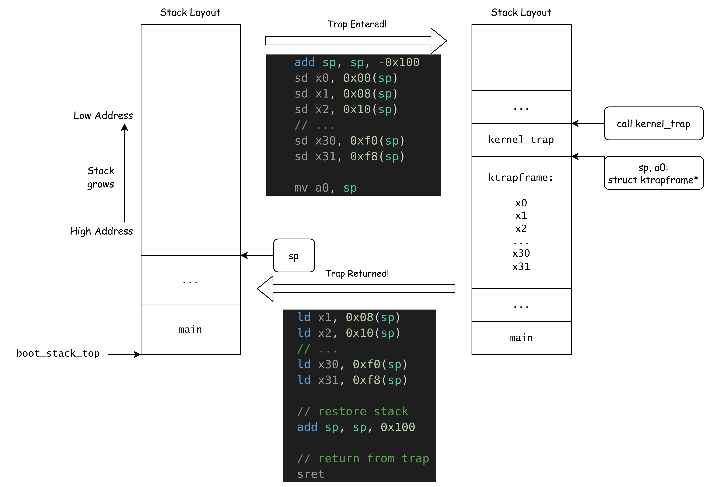

Trap, Exception, and Interrupt¶
Objectives of Experiment¶
- Understand exceptional control flow.
- Learn how the RISC-V architecture supports CPU interrupts.
- Master the Trap handling process.
xv6-lab2 Code Branch
https://github.com/yuk1i/SUSTech-OS-2025/tree/xv6-lab2
Use the command git clone https://github.com/yuk1i/SUSTech-OS-2025 -b xv6-lab2 xv6lab2 to download the xv6-lab2 code.
Run make run to execute the kernel for this lab, and you will encounter a Kernel Panic.
Recommended Reading
CSAPP, Chapter 8, Exceptional Control Flow.
Exceptional Control Flow¶
In a normal program execution state, the control flow (which can be thought of as the sequence of the program counter, or pc) proceeds step-by-step according to the predefined order of the program. However, an operating system inevitably needs to handle situations that fall "outside the predefined plan," such as program errors or changes in external state—e.g., a network packet arriving at the NIC, or a user pressing a key on the keyboard. Modern operating systems manage these events by altering the control flow, and we refer to this altered control flow as Exceptional Control Flow (ECF).
Exceptions, Traps, and Interrupts¶
In the RISC-V architecture, we define Exception, Interrupt, and Trap as follows:
- Exception: An unusual condition that occurs at the moment of instruction execution.
- Interrupt: An external event that is asynchronous to the current RISC-V core’s instruction execution.
- Trap: A synchronous transfer of control flow caused by an exception or interrupt. We can consider a Trap as the handling behavior for Exceptions and Interrupts.
What is Synchronous/Asynchronous?
Recall the single-cycle RISC-V CPU implemented in a digital logic course. We have a clock signal clk, and every (n) clock cycles, one instruction is executed.
Synchronous exceptions arise during instruction execution and are thus aligned with the clk signal, whereas asynchronous exceptions are entirely independent of the current instruction or clk.

Thus, it’s clear why the control flow transfer referred to as a Trap is "synchronous": we must at least wait for the clock cycle to arrive before performing the control flow transfer.
We use the term exception to refer to an unusual condition occurring at run time associated with an instruction in the current RISC-V thread. We use the term trap to refer to the synchronous transfer of control to a trap handler caused by an exceptional condition occurring within a RISC-V thread. Trap handlers usually execute in a more privileged environment.
We use the term interrupt to refer to an external event that occurs asynchronously to the current RISC-V thread. When an interrupt that must be serviced occurs, some instruction is selected to receive an interrupt exception and subsequently experiences a trap.
Source: riscv-spec-v2.1.pdf, Section 1.3 "Exceptions, Traps, and Interrupts".
Differences Between RISC-V and x86
Different textbooks provide similar definitions for Exception, Trap, and Interrupt. For example, CSAPP, referencing the x86 model, describes four types of control flow interruptions. The main distinctions lie in whether the exceptional control flow is synchronous with the instruction stream and whether the control flow returns to the original program after jumping to the exceptional control flow.

For instance, exception types in x86 include Page Fault (page missing exception) and Machine Check (Abort) (memory or hardware error).
However, in the RISC-V model, the return behavior mentioned above can be simulated in software. Thus, in the RISC-V hardware model, there are only two causes of control flow changes: Exceptions and Interrupts, with the result of such changes being entry into a Trap.
Note: RISC-V employs an extremely minimalist design philosophy at the hardware level: anything that can be handled by software is left out of hardware.
CSR: mstatus/sstatus¶
CSR
If you’re unfamiliar with CSR, please review the slides from the previous lab session.
You might find keywords like WPRI, WLRL, and WARL in the CSR field definitions confusing. Refer to riscv-privilege.pdf, Section 2.3 "CSR Field Specifications". For now, you can simply assume that bit fields defined by these keywords are ones we don’t need to care about or modify.
mstatus/sstatus: Machine/Supervisor Status Register. This register holds the control state of the RISC-V core. sstatus is essentially a Restricted View of mstatus.


Since the RISC-V manual’s definitions for each CSR register field are notoriously hard to locate, we provide a quick reference table here:
| Field | Full Name (Guessed) | Meaning |
|---|---|---|
| SPP | Supervisor Previous Privilege | The privilege level of the Hart before entering Supervisor mode. |
| SIE | Supervisor Interrupt Enabled | Interrupt enable flag in Supervisor mode. |
| SPIE | Supervisor Previous Interrupt Enabled | Interrupt enable state before entering Supervisor mode. |
| SUM | Supervisor User-Memory | Allows Supervisor mode to access pages with the U-bit set. |
Other fields we don’t currently use are omitted here.
Trap-Related Registers¶
Here’s a list of registers involved in the Trap handling process:
- stvec: Supervisor Trap Vector Base Address Register
- Stores the address of the Trap handler function. Often referred to as the "interrupt vector," which we’ll explain later.
- sip: Supervisor Interrupt Pending
- Indicates which interrupts are pending.
- sie: Supervisor Interrupt Enabled
- Indicates which interrupts can be processed.
- Note: Don’t confuse this with
sstatus.SIE.
- sepc: Supervisor Exception Program Counter
- The PC value at the time of the interrupt.
- scause: Supervisor Cause
- The reason for the interrupt.
- stval: Supervisor Trap Value
- Additional information about the interrupt.
stvec¶
When an exception or interrupt occurs, a Trap handler is needed to process it. The stvec (Supervisor Trap Vector Base Address Register) serves as the base address of the so-called "Trap vector table."
The vector table maps different types of Traps to their corresponding handlers.
If there’s only one handler, stvec can directly point to that handler’s address.
stvec
stvec mandates that the Trap handler entry must be aligned to 4 bytes (i.e., the last two bits are 0). These last two bits also indicate two modes:
- Direct Mode: All Traps enter at
pc <= BASE. - Vectored Mode: For asynchronous interrupts,
pc <= BASE + 4 * cause.
In our code, we use Direct Mode.

scause¶
When a Trap is caught and enters Supervisor Mode (S-mode), the scause register is written with a code indicating the event that caused the Trap.


sie & sip¶
The sip register is a 64-bit read-write register that stores information about pending interrupts, while sie is a corresponding 64-bit read-write register containing interrupt enable bits.
Interrupt cause number i (as shown in CSR scause) corresponds to bit i in the sip and sie registers.
Bits 15:0 are allocated to standard interrupt causes, while bits 16 and above are reserved for platform-specific or custom use.


sepc¶
When a Trap is caught and enters Supervisor Mode (S-mode),
the sepc register is written with the virtual address of the instruction that was interrupted or encountered an exception.
stval¶
When a Trap is caught and enters Supervisor Mode (S-mode),
the stval register is written with specific information related to the exception to assist software in handling the Trap.
For exceptions such as breakpoints, misaligned addresses, access faults, or page faults during instruction fetch, load, or store operations,
stval is set to a non-zero value representing the virtual address that caused the exception.
How the CPU Handles Traps¶
The Trap handling process can be divided into three main stages:
- Entering the Trap
- Trap Handler
- Returning from the Trap
1. Entering the Trap¶
When an Exception occurs, or the Hart is ready to handle an Interrupt, a Trap is triggered, and the CPU performs the following actions in hardware:
- scause <= {1b'Is_Interrupt, 63b'Cause}
- stval <= Trap_Value
- sepc <= pc
- sstatus.SPP <= Current_Privilege_Level
- sstatus.SPIE <= sstatus.SIE
- sstatus.SIE <= 0
- pc <= stvec
In summary: Set scause and stval => Save the PC to sepc => Save the current privilege level (U/S) to sstatus.SPP => Save the current interrupt state to sstatus.SPIE => Disable interrupts by setting sstatus.SIE = 0 to prevent interrupts during Trap handling => Jump to stvec.
2. Trap Handler¶
The stvec register stores the address of the Trap handler. After the CPU records the information related to the exception or interrupt causing the Trap, the pc points to the address stored in stvec, executing the corresponding Trap handler.
The Trap handler then processes the event based on the information stored in the registers, using different software behaviors as needed.
3. Returning from the Trap (sret)¶
RISC-V uses the sret instruction to exit a Trap in Supervisor mode, performing the following steps:
- sstauts.SIE <= sstatus.SPIE
- Current_Privilege_Level <= sstauts.SPP
- pc <= epc
Restore sstatus.SIE from sstatus.SPIE => Set the privilege level (U/S) to sstatus.SPP => Set the PC to sepc.
The sret instruction is essentially the reverse of the three steps performed when entering a Trap: restoring SIE, the privilege level, and the PC register.
Code Walkthrough¶
After the operating system boots, we initialize the stvec register to point to kernel_trap_entry.
// trap.c
void set_kerneltrap() {
assert(IS_ALIGNED((uint64)kernel_trap_entry, 4));
w_stvec((uint64)kernel_trap_entry); // DIRECT
}
When a Trap occurs, the CPU, after storing the relevant information, jumps to the kernel_trap_entry function pointed to by stvec, which serves as the interrupt vector entry point for S-mode.
.globl kernel_trap_entry
.align 2
kernel_trap_entry:
// we store all registers in the stack
add sp, sp, -0x100
sd x0, 0x00(sp)
sd x1, 0x08(sp)
sd x2, 0x10(sp)
// ...
sd x30, 0xf0(sp)
sd x31, 0xf8(sp)
// ...
The entry point allocates 0x100 bytes of stack space and saves all general-purpose registers (GPRs) onto the stack.
At this point, the stack holds 32 registers, each occupying 8 bytes, totaling 0x100 bytes, with addresses ranging from low to high corresponding to registers x0 to x31.
We define a struct ktrapframe whose memory layout matches the register layout on the stack.
This allows us to dereference a struct ktrapframe* pointer in C to access all GPRs saved on the stack.
struct ktrapframe {
uint64 x0; // x0
uint64 ra;
uint64 sp;
uint64 gp;
uint64 tp;
uint64 t0;
uint64 t1;
uint64 t2;
uint64 s0;
uint64 s1;
uint64 a0;
uint64 a1;
uint64 a2;
uint64 a3;
uint64 a4;
uint64 a5;
uint64 a6;
uint64 a7;
uint64 s2;
uint64 s3;
uint64 s4;
uint64 s5;
uint64 s6;
uint64 s7;
uint64 s8;
uint64 s9;
uint64 s10;
uint64 s11;
uint64 t3;
uint64 t4;
uint64 t5;
uint64 t6;
// 32 * 8 bytes = 256 (0x100) bytes
};
Stack
Upon entering the Trap handler, we can assume the previous program was executing C code and had a valid stack.
We naturally want the Trap handler to be written in C, which also requires a valid stack space.
Thus, we can directly reuse the stack space of the program that was executing, as long as we ensure the sp pointer can be restored.
Additionally, the C compiler maintains stack balance: it deallocates as much space as it allocates.
Therefore, as long as our assembly-level stack operations are balanced, we can safely use the existing stack for context saving, leaving the rest to the compiler.
Context
Trap handling requires "pausing the current task but being able to resume it later." For the CPU, this simply means saving the original registers, performing other tasks, and then restoring the registers.
Upon entering the Trap handler, the 31 GPRs (x1-x31) are in use by the original program. The Trap handler must ensure that when control returns to the original program, the GPRs remain consistent with their state before the Trap. Thus, we need memory space to save these registers and restore their original values upon returning from the Trap. We refer to these registers as the Context of the original program.
Therefore, we implement a context-switching mechanism in assembly, which involves two steps:
- Save the CPU registers (context) to memory (on the stack).
- Restore the CPU registers from memory (the stack).
Next, we set a0 to sp and call kernel_trap to continue Trap handling in C code.
.globl kernel_trap_entry
.align 2
kernel_trap_entry:
// ...
mv a0, sp // make a0 point to the ktrapframe structure
call kernel_trap
// ...
Since RISC-V uses a0 to pass the first argument, a0 now points to the struct ktrapframe on the stack. Thus, the first parameter of the kernel_trap function is struct ktrapframe* ktf, corresponding to the value of a0.
void kernel_trap(struct ktrapframe *ktf) {
assert(!intr_get());
if ((r_sstatus() & SSTATUS_SPP) == 0)
panic("kerneltrap: not from supervisor mode");
uint64 cause = r_scause();
uint64 exception_code = cause & SCAUSE_EXCEPTION_CODE_MASK;
if (cause & SCAUSE_INTERRUPT) {
// handle interrupt
switch (exception_code) {
case SupervisorTimer:
debugf("s-timer interrupt, cycle: %d", r_time());
set_next_timer();
break;
case SupervisorExternal:
debugf("s-external interrupt.");
plic_handle();
break;
default:
errorf("unhandled interrupt: %d", cause);
goto kernel_panic;
}
} else {
// kernel exception, unexpected.
goto kernel_panic;
}
assert(!intr_get());
return;
kernel_panic:
panicked = 1;
errorf("=========== Kernel Panic ===========");
print_sysregs(true);
print_ktrapframe(ktf);
panic("kernel panic");
}
Upon entering kernel_trap, the CPU’s interrupt bit sstatus.SIE should remain disabled, and the Previous Privilege should be Supervisor mode. We use assertions to ensure the code executes as expected.
Why We Write Assertions
Assertions are a critical debugging and error-detection tool in operating system development.
They help developers catch potential logic errors early in program execution.
By inserting assertions in the code, we can immediately detect states or conditions that deviate from expectations, rather than waiting for a crash or unpredictable behavior and then guessing the cause.
In other words, if we can detect at some point that the program’s state has deviated from our expectations, we can make it crash at the "first scene" to provide more effective debugging information.
Next, we read the scause register to determine whether the Trap was caused by an interrupt or an exception. We handle timer interrupts and PLIC-managed external interrupts. For any other unexpected Trap causes, we print the ktrapframe structure saved on the stack for debugging and use the panic macro to indicate an unrecoverable kernel error, halting the system.
Finally, we exit kernel_trap and return to kernel_trap_entry to continue execution.
.globl kernel_trap_entry
.align 2
kernel_trap_entry:
// ...
call kernel_trap
// restore all registers
//ld x0, 0x00(sp) // do not write to x0
ld x1, 0x08(sp)
ld x2, 0x10(sp)
// ...
ld x30, 0xf0(sp)
ld x31, 0xf8(sp)
// restore stack
add sp, sp, 0x100
// return from trap
sret
After exiting the C environment, we restore all GPRs from the stack, restore the stack space, and use sret to exit the Trap.
The sret instruction restores the value of sepc to the PC register.
The following diagram illustrates the stack structure during the process of entering the Trap, constructing the ktrapframe, and then restoring and exiting with sret:

Lab Report¶
Question 1
Based on this week’s lab content, use the GDB debugger to print the value of stvec when the code from last week’s lab runs to the main function. Further, using this stvec value, explain why the operating system reboots infinitely after failing to read the CSR mvendorid value.
You may need to use GDB commands like b main (set a breakpoint at the main function entry), c (continue execution), and print $stvec.
Question 2
In main.c, the ebreak instruction actively triggers an exception. Run the kernel with make run, and you’ll observe a Kernel Panic along with some printed CSRs.
Refer to the RISC-V Privileged Architecture Manual, Section 4.1.1 Supervisor Status Register (sstatus), and extract the values of the SIE, SPIE, and SPP bits from the sstatus value printed in the Kernel Panic log. Explain their meanings.
Referring to the description of Interrupt/Exception Codes in scause, write down the meaning of the current scause value.
Next, modify the else branch in the kernel_trap function in trap.c so that the exception caused by ebreak does not jump to the kernel_panic label but instead exits the kernel_trap handler:
if (cause & SCAUSE_INTERRUPT) {
// handle interrupt
// ...
} else {
if (exception_code == ?) {
debugf("breakpoint");
} else {
// kernel exception, unexpected.
goto kernel_panic;
}
}
Write what should replace the ?. Run the kernel with make run. What do you observe? Explain the results.
Question 3
The RISC-V Privileged Architecture Manual, Section 3.3.1 Environment Call and Breakpoint, explains the ecall and ebreak instructions as follows:
ECALL and EBREAK cause the receiving privilege mode’s epc register to be set to the address of the ECALL or EBREAK instruction itself, not the address of the following instruction. As ECALL and EBREAK cause synchronous exceptions, they are not considered to retire, and should not increment the minstret CSR.
Add a line of code after debugf("breakpoint"); to ensure that, upon exiting the Trap, the subsequent instruction is executed instead of repeatedly executing ebreak.
Note: You can refer to the disassembled kernel image in build/kernel.asm to see the instructions at each address.
Note 2: You can use the functions w_sepc() and r_sepc() defined in riscv.h to read/write the sepc register.
Interrupt¶
The RISC-V specification defines three standard interrupts for each Hart in M/S modes: Timer Interrupt, Software Interrupt, and External Interrupt.
When Can an Interrupt Be Handled?¶
RISC-V defines three standard interrupts—Software Interrupt, Timer Interrupt, and External Interrupt—corresponding to Exception Codes 1, 5, and 9 in scause, and bits 1, 5, and 9 in sip/sie.
When an interrupt arrives, the RISC-V core checks whether it can currently handle the interrupt and enter a Trap:
- (Currently running in S-mode with
sstatus.SIE == 1) OR currently running in U-mode. - The interrupt type’s bit
iis set to 1 in bothsieandsip.
An interrupt i will trap to S-mode if both of the following are true:
(a) either the current privilege mode is S and the SIE bit in the sstatus register is set, or the current privilege mode has less privilege than S-mode; and
(b) bit i is set in both sip and sie.
When a Software/Timer/External Interrupt reaches the CPU, the corresponding bit in sip is set high. The CPU then evaluates the above conditions, entering a Trap if they are met.
Timer Interrupt¶
A timer interrupt can be understood as a program that executes periodically. It triggers an interrupt at fixed intervals, during which we can perform operations like process scheduling.
The RISC-V platform provides a real-time counter, the time register, which increments at a constant frequency and is shared across all cores. Additionally, RISC-V provides each core with a timecmp register. Whenever time >= timecmp, the core sets the sip.STIP bit high for a timer interrupt. If the core meets the conditions to enter a Trap, it does so.
The SBI provides an SBI call, SBI_SET_TIMER, allowing Supervisor-mode software to set the timecmp register. Knowing the frequency of the time register, we can calculate how much time will increase in a given period (e.g., 10ms) and set timecmp accordingly to receive a timer interrupt after 10ms. Each time a timer interrupt occurs, we recalculate and set the next timecmp, achieving a timer interrupt every 10ms.
The timer-related code is located in timer.c.
During timer interrupt initialization, we use the SBI call SET_TIMER to set timecmp and enable the timer interrupt in sie with SIE_STIE.
When handling a timer interrupt in kernel_trap, we calculate the next timecmp and call SET_TIMER again via SBI, repeating the cycle.
Lab Report - Question 4
Comment out the line asm volatile("ebreak" ::: "s11"); in main.c and uncomment intr_on().
Run make run and observe the cycle count printed each time a timer interrupt is triggered.
Comment out the call to set_next_timer() in kernel_trap in trap.c, then run make run again and observe the cycle count printed for each timer interrupt.
Explain the observed phenomena and why they occur.
mtimecmp and stimecmp
In fact, the standard RISC-V Privileged Architecture Manual only defines the mtimecmp register for M-mode. S-mode software must use an SBI call to set the timer interrupt, which internally uses OpenSBI to set mtimecmp and sets STIP in mtvec to emulate a timer interrupt for S-mode. This reflects RISC-V’s hardware design principle of leaving tasks to software whenever possible, with M-mode emulating behavior for higher-level software.
However, privilege mode switches are quite time-consuming. To improve Supervisor timer interrupt performance, the RISC-V Sstc extension introduces the stimecmp CSR, allowing Supervisor mode to directly set its timer interrupt counter.
We can disable the Sstc extension in QEMU’s CPU flags (-cpu rv64,sstc=off) to observe OpenSBI’s behavior without Sstc. Use the command qemu-system-riscv64 -nographic -machine virt -cpu rv64,svadu=off,sstc=off -m 512 -kernel build/kernel -S -gdb tcp::3333 to start QEMU with a debugger.
After attaching GDB, use the c (continue) command to proceed. When QEMU outputs kernel_trap: s-timer interrupt, press Ctrl-C in the GDB terminal to interrupt execution. Use print $mtvec to get the M-mode interrupt vector address, and set a breakpoint with b *0x800004f0 at the interrupt vector.
Resume execution with c. When the breakpoint at 0x800004f0 is hit, use print $mcause to check the M-mode Trap cause.
Without Sstc, you should see mcause alternate between 0x8000000000000007 (M-mode Timer Interrupt) and 0x9 (S-mode ecall). With the Sstc extension, mcause will only show 0x9. In this case, OpenSBI directly sets stimecmp when using SBI_SET_TIMER, avoiding the routing of S-mode timer interrupts through OpenSBI.
External Interrupt¶
When we previously described interrupts and Traps, we mentioned, "When an Interrupt arrives, the RISC-V core...". So, how do external interrupts reach each core?
The PLIC (Platform-Level Interrupt Controller) is an IP core on the RISC-V platform for managing external interrupts. Each RISC-V platform has multiple cores (Harts), but typically only one PLIC.
In short, each peripheral notifies the PLIC when it has an interrupt to process, with each device assigned an interrupt number. The PLIC routes the interrupt to one or more cores based on preconfigured rules, setting the mip.MEIP or sip.SEIP bit of the target core(s) to request an interrupt.
The core must claim the interrupt from the PLIC to handle it and complete it after processing.
Specification: https://github.com/riscv/riscv-plic-spec/blob/master/riscv-plic.adoc
AMD64 and Aarch64
Similar global interrupt controllers exist on x86 (IA32), x86-64 (AMD64), and ARM platforms: PIC, APIC, GIC
PLIC Structure¶
The PLIC can manage 1–1023 interrupt sources, each with a priority level (Priority). The PLIC refers to interrupt recipients as Hart Contexts (where a Hart Context is a privilege mode on a given Hart). Each Context can be viewed as a tuple (Hart ID, Privilege Level), corresponding to a Hart and a privilege level. Since RISC-V does not yet specify User-Mode Interrupts (the privilege spec only defines mie/mip and sie/sip for Machine and Supervisor modes), we can assume each core has two Contexts: one for M-mode and one for S-mode external interrupts.
The PLIC can manage 0–15,871 Contexts, setting whether each interrupt source is allowed to route to a specific Context (Enabled Bit) and the Priority Threshold for each Context.
The PLIC sets the mip.MEIP or sip.SEIP bit of a Hart, and whether the Hart enters an interrupt Trap depends on the conditions described earlier.

Memory-Mapped Registers¶
The PLIC exposes its management interface via Memory-Mapped Registers. We use offsets to locate each register. Typically, such an IP core has a fixed base address, which in QEMU is 0x0c00_0000.
Memory-Mapped Register, MMIO
Memory-Mapped Registers are a critical technique in computer architecture for peripheral device and hardware control.
A Memory-Mapped Register maps a hardware device’s registers directly into the processor’s memory address space. This allows the CPU to access a specific address as if it were memory, when it actually corresponds to a register within a device.
I/O operations using Memory-Mapped Registers are called Memory-Mapped I/O (MMIO).
For example, the Specification’s Memory Map defines base + 0x4 * i as the priority of interrupt source i:
base + 0x000000: Reserved (interrupt source 0 does not exist)
base + 0x000004: Interrupt source 1 priority
base + 0x000008: Interrupt source 2 priority
...
base + 0x000FFC: Interrupt source 1023 priority
In plicinit, we set the Interrupt Priority of UART0 (interrupt 10) to 1 at base + 10*4 = 1. In plicinithart, we enable the S-mode Context of the current Hart to receive interrupt 10 and set its Priority Threshold to 0. Finally, we enable the core’s sie.SEIE bit to allow Supervisor-Mode External Interrupts. Before the while(1) loop in main.c, we use intr_on to enable S-mode interrupts for the entire CPU.
Claim & Complete¶
When a Hart enters a Trap due to an External Interrupt, it must claim the interrupt from the PLIC to process it. After handling, it must complete the interrupt to notify the PLIC.

Serial Port Interrupt¶
On the QEMU platform, the serial port uses the uart8250 device model, exposing eight MMIO registers. For details, see: https://www.lammertbies.nl/comm/info/serial-uart
The uart8250 has a read port (RHR) and a write port (THR), with bits in the LSR register indicating whether the read port has data and the write port is free. Read and write functions are in uartgetc and uart_putchar.
In the serial initialization function console_init, we write specific flags to the IER register at the uart8250’s MMIO address, enabling the device to generate an interrupt when input is available. We then register interrupt 10 with the PLIC, routing it to the current core’s S-mode, and handle it in kernel_trap.
if (cause & SCAUSE_INTERRUPT) {
// handle interrupt
switch (exception_code) {
case SupervisorExternal:
debugf("s-external interrupt.");
plic_handle();
break;
}
}
The plic_handle function claims the current external interrupt’s source number from the PLIC. If it’s UART0’s interrupt 10, it passes it to uart_intr() for processing.